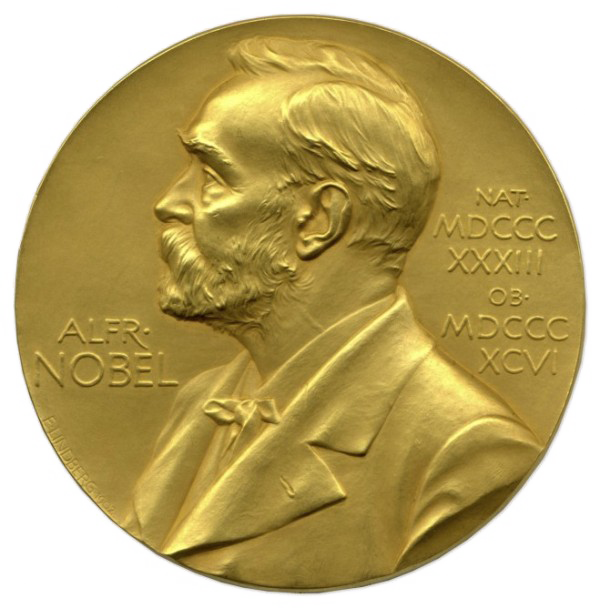
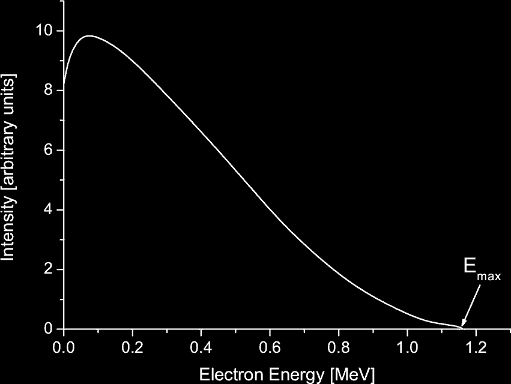
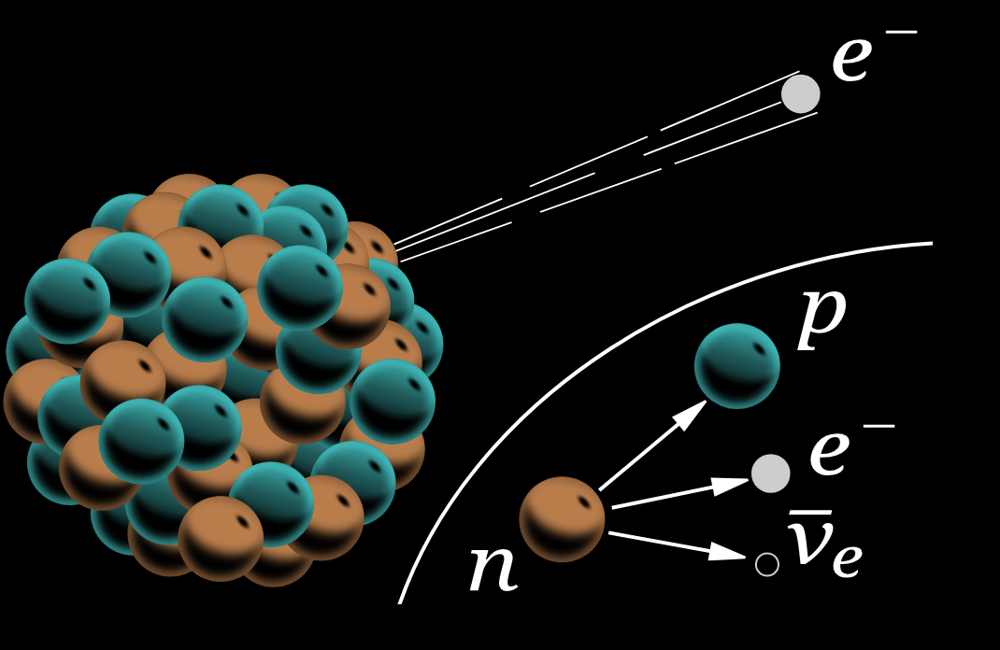
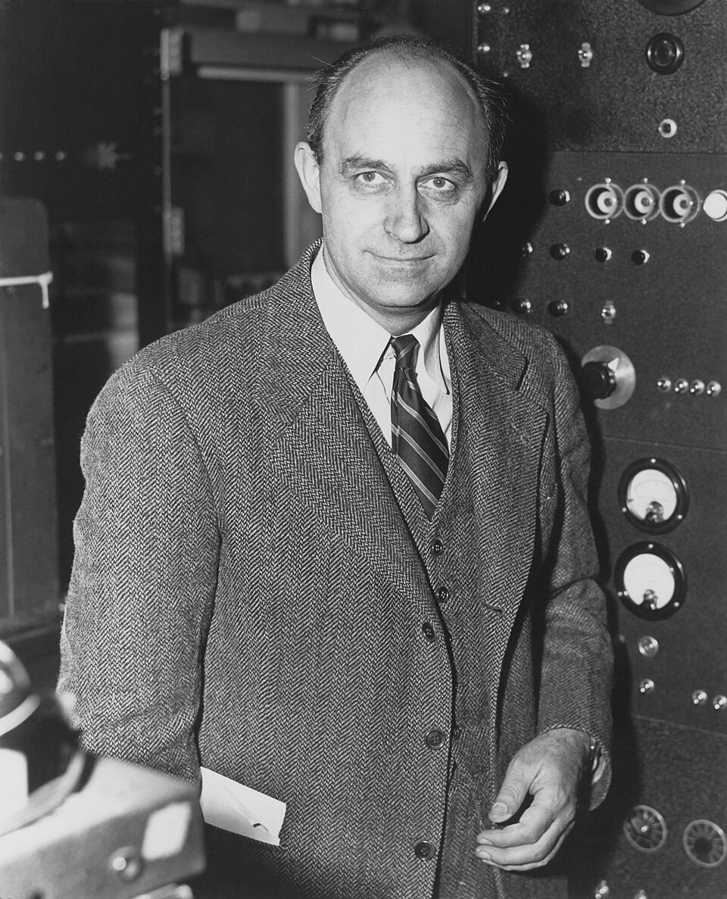
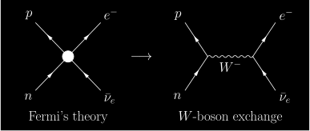
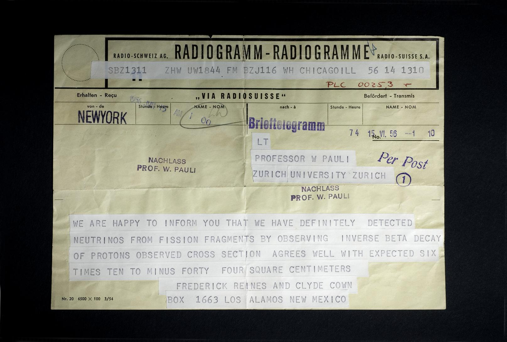
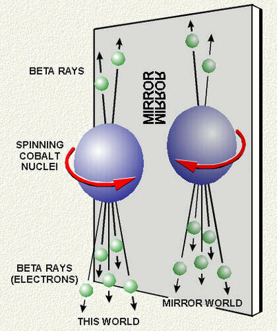
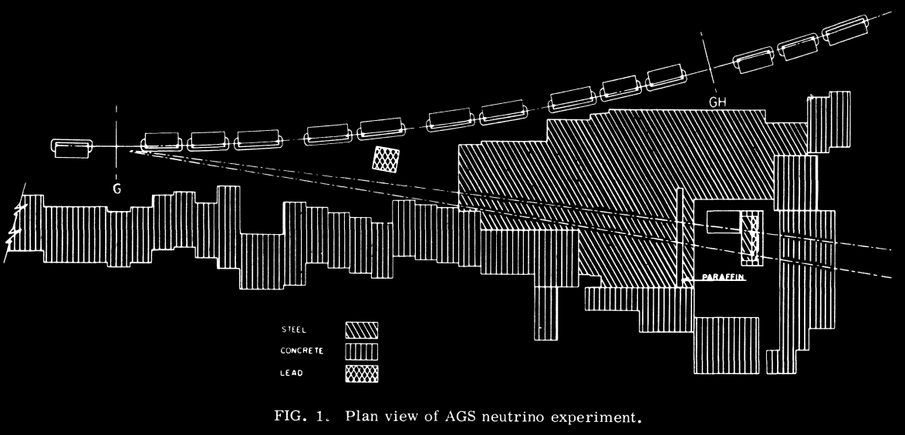
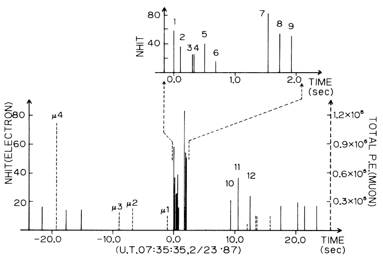

Ben Roberts (UQ) — 2026 —
broberts.io/slides
## Hunting Ghosts in the Ice ## _Neutrinos, IceCube, and the 2026 Nobel Prize_ <br> <div style="display: flex; justify-content: center; align-items: center; gap: 60px"> <div style="width: 32%; text-align: center"> <br> <font size="3" color="#a0a0a0">[<a href="https://news.wisc.edu/university-of-wisconsin-madison-professor-francis-halzen-named-2026-nobel-laureate-in-physics/">news.wisc.edu</a>]</font> <h4 style="margin: 6px 0 0 0">Francis Halzen</h4> </div> <p></p> <div style="width: 22%; text-align: center; position: relative; top: 47px"> <!-- top: shifts Bert & Ernie down; tune to align names --> <br> <font size="3" color="#a0a0a0">[Sesame Street]</font> <h4 style="margin: 6px 0 0 0">Bert and Ernie</h4> </div> </div> <br> <br> <br> #### Benjamin M. Roberts _School of Mathematics and Physics, University of Queensland, Australia_ <br> <div style="font-size: 0.8em">Physics Colloquium — 6 November 2026</div>
# History of neutrinos ### _(our point of view)_ <div style="text-align: center; float: right; width: 42%; position: relative; top: -40px"> <!-- top: raises the image column; more negative = higher --> <br> <br> <div class="r-stack"> <!-- Beta spectrum of RaE (210Bi), decay diagram overlaid top right (index 1); the Fermi block appears BELOW it (index 3); both until the telegram (index 4) --> <!-- Overlay position/size: top / right / width on the decay-diagram img --> <div class="fragment fade-out" data-fragment-index="4" style="width: 100%"> <div class="fragment fade-in" data-fragment-index="1"> <div style="position: relative; width: 85%; margin: 15px auto 1px auto"> <p></p> <p></p> </div> <div style="font-size: 16px; line-height: 1.2"><font size="3" color="#a0a0a0"> [F Klemm + Inductiveload/ Wikimedia Commons] </font></div> </div> <div class="fragment fade-in" data-fragment-index="3"> <div style="display: flex; justify-content: center; gap: 40px"> <div> <br> <p></p> <div style="font-size: 16px; line-height: 1.2"><font size="3" color="#a0a0a0">[US Dept. of Energy]</font></div> </div> <!-- right column spans the Fermi photo: equation at its top, image at its bottom --> <div style="height: 320px; margin-top: 15px; display: flex; flex-direction: column; justify-content: space-between; align-items: center"> <br> <div>\[\mathcal{L}_{\rm F} = -G_F\,(\bar\psi_p\gamma^\mu\psi_n)(\bar\psi_e\gamma_\mu\psi_\nu)\]</div> <p></p> </div> </div> </div> </div> <!-- Telegram: 1956 (index 4) until parity (index 5) --> <div class="fragment fade-out" data-fragment-index="5" style="width: 100%"> <div class="fragment fade-in" data-fragment-index="4"> <p></p> <div style="font-size: 16px; line-height: 1.2"><font size="3" color="#a0a0a0">[Reines & Cowan to Pauli, June 1956: CERN Pauli Archive]</font></div> </div> </div> <!-- Parity violation, 1957 (index 5) until 1962 (index 6): Lee & Yang + Wu side by side above, NIST experiment concept below --> <div class="fragment fade-out" data-fragment-index="6" style="width: 100%"> <div class="fragment fade-in" data-fragment-index="5"> <div style="display: flex; justify-content: center; gap: 20px"> <div style="width: 30%"> <div style="font-size: 13px; line-height: 1.2"><font size="2" color="#a0a0a0">[U. Chicago]</font></div> </div> <div style="width: 30%"> <div style="font-size: 13px; line-height: 1.2"><font size="2" color="#a0a0a0">[Columbia]</font></div> </div> </div><br> <p></p> <div style="font-size: 13px; line-height: 1.2"><font size="2" color="#a0a0a0">[Smithsonian]</font></div> </div> </div> <!-- More flavours, 1962 (index 6) until Sun/SN1987A (index 7): Schwartz + spark chamber above, AGS below --> <div class="fragment fade-out" data-fragment-index="7" style="width: 100%"> <div class="fragment fade-in" data-fragment-index="6"> <div style="width: 40%; margin: 0 auto"> <div style="font-size: 16px; line-height: 1.15"><font size="3">Melvin Schwartz with the 10-ton spark chamber, showing a multiple exposure of cosmic-ray muon tracks.</font> <font size="1" color="#a0a0a0">[Brookhaven Nat. Lab.]</font></div> </div> <p></p> </div> </div> <!-- SN1987A, Kamiokande-II: from 1987 (point 6) to the end --> <div class="fragment fade-in" data-fragment-index="7" style="width: 100%"> <p></p> <div style="font-size: 16px; line-height: 1.2"><font size="3" color="#a0a0a0">[Hirata <i>et al.</i>, <a href="https://journals.aps.org/prl/pdf/10.1103/PhysRevLett.58.1490">Phys. Rev. Lett. <b>58</b>, 1490 (1987)</a>]</font></div> </div> </div> </div> <div style="text-align: left; float: left; width: 56%; font-size: 0.75em"> <br> <div class="fragment" data-fragment-index="1"> <h3 style="margin: 0"><span style="color: cyan">1930</span> <b>Theorised</b> <i style="font-size: 0.8em">"Dear Radioactive Ladies and Gentlemen, ..."</i></h3> <h4 style="margin: 0 0 0px 0"> • Pauli's "desperate remedy": undetectable neutral particle, explain energy conservation in Bi $\beta$ decay</h4> <h4 class="fragment" data-fragment-index="2" style="margin: 0 0 10px 0"><i style="font-size: 0.8em"> "Unfortunately, I cannot appear in Tubingen personally since I am indispensable here in Zurich because of a ball"</i></h4> </div> <br> <div class="fragment" data-fragment-index="3"> <h3 style="margin: 0"><span style="color: cyan">1933</span> <b>Fermi theory</b></h3> <h4 style="margin: 0 0 0px 0"> • Fermi's theory of $\beta$ decay [<a href="https://doi.org/10.1007/BF01351864">Z. Phys. <b>88</b>, 161 (1934)</a>] <i style="font-size: 0.8em">(rejected by Nature)</i></h4> <h4 style="margin: 0 0 10px 0"> • Bethe and Peierls: $\sigma \sim 10^{-44}$ cm$^2$, "no practically possible way of observing" [<a href="https://www.nature.com/articles/133532a0">Nature <b>133</b>, 532 (1934)</a>]</h4> </div> <br> <div class="fragment" data-fragment-index="4"> <h3 style="margin: 0"><span style="color: cyan">1956</span> <b>Detected</b> <span style="color: #ccc">1995</span></h3> <h4 style="margin: 0 0 10px 0"> • Reines and Cowan [<a href="https://www.science.org/doi/10.1126/science.124.3212.103">Science (1956)</a>]: reactor $\bar\nu_e$ at Savannah River: $\bar\nu_e + p \to e^+ + n$</h4> </div> <br> <div class="fragment" data-fragment-index="5"> <h3 style="margin: 0"><span style="color: cyan">1957</span> <b>Parity violation</b> <span style="color: #ccc">1957</span></h3> <h4 style="margin: 0 0 0px 0"> • Lee and Yang [<a href="https://journals.aps.org/pr/abstract/10.1103/PhysRev.104.254">Phys. Rev. <b>104</b>, 254 (1956)</a>], C. S. Wu: $^{60}$Co $\beta$ decay [<a href="https://journals.aps.org/pr/abstract/10.1103/PhysRev.105.1413">Phys. Rev. <b>105</b>, 1413 (1957)</a>]</h4> </div> <br> <div class="fragment" data-fragment-index="6"> <h3 style="margin: 0"><span style="color: cyan">1962</span> <b>Now in more flavours</b> <span style="color: #ccc">1988</span></h3> <h4 style="margin: 0 0 10px 0"> • $\nu_\mu \neq \nu_e$ at Brookhaven [<a href="https://journals.aps.org/prl/abstract/10.1103/PhysRevLett.9.36">Phys. Rev. Lett. <b>9</b>, 36 (1962)</a>]; doublet structure of leptons</h4> <!-- $\nu_\tau$ at Fermilab (DONUT) in 2000 --> </div> <br> <div class="fragment" data-fragment-index="7"> <h3 style="margin: 0"><span style="color: cyan">1968, 1987</span> <b>From the Sun and a supernova</b> <span style="color: #ccc">2002</span></h3> <h4 style="margin: 0 0 0px 0"> • Davis's Homestake tank finds $\tfrac13$ of the predicted $\nu_e$: the solar neutrino problem</h4> <h4 style="margin: 0 0 10px 0"> • SN1987A: $\sim$25 events in 13 s (Kamiokande-II, IMB, Baksan): neutrino astronomy works</h4> </div> <br> <div class="fragment" data-fragment-index="8"> <h3 style="margin: 0"><span style="color: cyan">1998–2002</span> <b>Oscillating, so massive</b> <span style="color: #ccc">2015</span></h3> <h4 style="margin: 0 0 10px 0"> • Super-K (atmospheric) and SNO (solar): flavours change in flight</h4> </div> <br> <div class="fragment" data-fragment-index="9"> <h3 style="margin: 0"><span style="color: cyan">2013</span> <b>From the cosmos</b> <span style="color: #ccc">2026</span></h3> <h4 style="margin: 0 0 10px 0"> • IceCube: TeV–PeV neutrinos from beyond the Galaxy</h4> </div> </div>
# History of neutrinos ### _(their point of view)_ <div style="text-align: left; float: left; width: 56%; font-size: 0.75em"> <br> <div class="fragment"> <h3 style="margin: 0"><span style="color: cyan">$t < 1$ s</span> <b>In equilibrium</b></h3> <h4 style="margin: 0 0 10px 0"> • $T > 1$ MeV: weak reactions ($\nu\bar\nu \leftrightarrow e^+e^-$, $\nu e \leftrightarrow \nu e$) keep neutrinos thermal with everything else</h4> </div> <br> <div class="fragment"> <h3 style="margin: 0"><span style="color: cyan">$t \approx 1$ s</span> <b>Freeze-out</b></h3> <h4 style="margin: 0 0 10px 0"> • $\Gamma \sim G_F^2 T^5$ falls below $H \sim T^2/M_{\rm Pl}$: neutrinos decouple and free-stream ever after</h4> </div> <br> <div class="fragment"> <h3 style="margin: 0"><span style="color: cyan">$t \approx$ few s</span> <b>Left out in the cold</b></h3> <h4 style="margin: 0 0 10px 0"> • $e^+e^-$ annihilation reheats the photons, not the neutrinos: $T_\nu = (4/11)^{1/3}\, T_\gamma$</h4> </div> <br> <div class="fragment"> <h3 style="margin: 0"><span style="color: cyan">$t \approx 3$ min</span> <b>Set the helium</b></h3> <h4 style="margin: 0 0 10px 0"> • The same weak reactions freeze $n/p \approx 1/7$ $\Rightarrow$ 25% $^4$He by mass (BBN)</h4> </div> <br> <div class="fragment"> <h3 style="margin: 0"><span style="color: cyan">$\gtrsim 10^8$ yr</span> <b>Stars</b></h3> <h4 style="margin: 0 0 10px 0"> • Two $\nu_e$ per $^4$He made; the Sun emits $2\times10^{38}$ $\nu$/s: 65 billion cross your thumbnail each second</h4> </div> <br> <div class="fragment"> <h3 style="margin: 0"><span style="color: cyan">Core collapse</span> <b>Supernovae</b></h3> <h4 style="margin: 0 0 10px 0"> • 99% of $3\times10^{53}$ erg leaves as $10^{58}$ neutrinos in $\sim$10 s, and they help drive the explosion</h4> </div> <br> <div class="fragment"> <h3 style="margin: 0"><span style="color: cyan">Today</span> <b>Cosmic neutrino background</b></h3> <h4 style="margin: 0 0 10px 0"> • $T_\nu \approx 1.95$ K, $\sim$340 cm$^{-3}$; never directly detected, but felt via $N_{\rm eff} \approx 3.04$ (CMB) and structure growth ($\sum m_\nu \lesssim 0.1$ eV)</h4> </div> <br> <div class="fragment"> <h3 style="margin: 0"><span style="color: cyan">Also</span> <b>Everything else</b></h3> <h4 style="margin: 0 0 10px 0"> • Earth's radioactivity, reactors, cosmic-ray showers, cosmic accelerators (TeV–PeV), and the still-unseen EeV cosmogenic (GZK) flux</h4> </div> <br> <h4 class="fragment" style="margin: 12px 0 0 0"> <b>The most abundant matter particle, and the oldest relic: nothing has touched one since the first second</b></h4> </div> <div style="text-align: center; float: right; width: 42%"> <br> <div style="border: 2px dashed #888; border-radius: 10px; height: 330px; width: 90%; margin: 0 auto 28px auto; display: flex; align-items: center; justify-content: center; color: #aaa; font-size: 0.65em; padding: 0 24px; box-sizing: border-box"> <div>Image 1 — Cosmic-history timeline, with "neutrinos decouple, $t = 1$ s" marked beside "CMB, $t = 380{,}000$ yr"<br>[ESA/Planck or NASA/WMAP "History of the Universe"]</div> </div> <div style="border: 2px dashed #888; border-radius: 10px; height: 330px; width: 90%; margin: 0 auto; display: flex; align-items: center; justify-content: center; color: #aaa; font-size: 0.65em; padding: 0 24px; box-sizing: border-box"> <div>Image 2 — The Sun, imaged in neutrinos (500 days of Super-Kamiokande data)<br>[APOD 5 June 1998, R. Svoboda and K. Gordan (LSU)]</div> </div> </div>
# What is a neutrino? <br> <div style="text-align: left; float: left; width: 50%"> <br> <h2>Heading</h2> <h3> • Dot point one</h3> <h3> • Dot point two</h3> <h3> • Dot point three</h3> <br> <div class="fragment"> <h2>Second heading</h2> <h3> • Dot point one</h3> <h3> • Dot point two</h3> </div> </div> <div style="text-align: center; float: right; width: 50%"> <br> <br> <font size="3">[Author <i>et al.</i>, Journal (Year)]</font> </div>
# Why "ghost"? <br> <div style="text-align: left; float: left; width: 50%"> <br> <h2>Heading</h2> <h3> • Dot point one</h3> <h3> • Dot point two</h3> <h3> • Dot point three</h3> <br> <div class="fragment" style="font-size: 1.5em"> $$E = mc^2$$ </div> </div> <div style="text-align: center; float: right; width: 50%"> <br> <br> <font size="3">[Author <i>et al.</i>, Journal (Year)]</font> </div>
## The neutrino sky, 30 orders of magnitude <br> <div style="text-align: center; float: center; width: 95%"> <br> <font size="3">[Author <i>et al.</i>, Journal (Year)]</font> </div> <br> <div class="fragment" style="text-align: left; float: center; width: 65%"> <h3> • Dot point one</h3> <h3> • Dot point two</h3> </div>
<br><br><br><br><br><br><br><br> # Why neutrinos matter
# The mass puzzle (Nobel 2015) <br> <div style="text-align: left; float: left; width: 50%"> <br> <h2>Heading</h2> <h3> • Dot point one</h3> <h3> • Dot point two</h3> <h3> • Dot point three</h3> <br> <div class="fragment"> <h2>Second heading</h2> <h3> • Dot point one</h3> <h3> • Dot point two</h3> </div> </div> <div style="text-align: center; float: right; width: 50%"> <br> <br> <font size="3">[Author <i>et al.</i>, Journal (Year)]</font> </div>
# The open questions <br> <div style="text-align: left; float: left; width: 50%"> <br> <h2>Heading</h2> <h3> • Dot point one</h3> <h3> • Dot point two</h3> <h3> • Dot point three</h3> <br> <div class="fragment"> <h2>Second heading</h2> <h3> • Dot point one</h3> <h3> • Dot point two</h3> </div> </div> <div style="text-align: center; float: right; width: 50%"> <br> <br> <font size="3">[Author <i>et al.</i>, Journal (Year)]</font> </div>
## Why ghosts make the best messengers <br> <div style="text-align: center; float: center; width: 95%"> <br> <font size="3">[Author <i>et al.</i>, Journal (Year)]</font> </div> <br> <div class="fragment" style="text-align: left; float: center; width: 65%"> <h3> • Dot point one</h3> <h3> • Dot point two</h3> </div>
# The 100-year cosmic-ray question <br> <div style="text-align: left; float: left; width: 50%"> <br> <h2>Heading</h2> <h3> • Dot point one</h3> <h3> • Dot point two</h3> <h3> • Dot point three</h3> <br> <div class="fragment"> <h2>Second heading</h2> <h3> • Dot point one</h3> <h3> • Dot point two</h3> </div> </div> <div style="text-align: center; float: right; width: 50%"> <br> <br> <font size="3">[Author <i>et al.</i>, Journal (Year)]</font> </div>
<br><br><br><br><br><br><br><br> # IceCube: what it is and how it works
## From Markov's idea to a cubic kilometre <br> <div style="text-align: center; float: center; width: 95%"> <br> <font size="3">[Author <i>et al.</i>, Journal (Year)]</font> </div> <br> <div class="fragment" style="text-align: left; float: center; width: 65%"> <h3> • Dot point one</h3> <h3> • Dot point two</h3> </div>
# IceCube by the numbers <br> <div style="text-align: left; float: left; width: 50%"> <br> <h2>Heading</h2> <h3> • Dot point one</h3> <h3> • Dot point two</h3> <h3> • Dot point three</h3> <br> <div class="fragment"> <h2>Second heading</h2> <h3> • Dot point one</h3> <h3> • Dot point two</h3> </div> </div> <div style="text-align: center; float: right; width: 50%"> <br> <br> <font size="3">[Author <i>et al.</i>, Journal (Year)]</font> </div>
# How it sees: Cherenkov light in the clearest ice on Earth <div> <div style="text-align: left; float: left; width: 50%"> <div class="fragment fade-in"> <br> <h3>Left heading</h3> <h4> • Dot point one</h4> <h4> • Dot point two</h4> </div> </div> <div style="text-align: left; float: right; width: 50%"> <div class="fragment fade-in"> <br> <h3>Right heading</h3> <h4> • Dot point one</h4> <h4> • Dot point two</h4> </div> </div> </div>
# Tracks, cascades, and beating the background ### Subheading <br> <div> <div class="fragment fade-in" style="text-align: center; float: left; width: 32%"> <br> <font size="3">[Source]</font> <h3>Caption one</h3> </div> <div class="fragment fade-in" style="text-align: center; float: left; width: 32%; margin-left: 2%"> <br> <font size="3">[Source]</font> <h3>Caption two</h3> </div> <div class="fragment fade-in" style="text-align: center; float: right; width: 32%"> <br> <font size="3">[Source]</font> <h3>Caption three</h3> </div> </div> <div class="fragment fade-in" style="text-align: left; float: left; width: 100%"> <br> <h3> • Summary dot point</h3> </div>
<br><br><br><br><br><br><br><br> # What IceCube found
# 2013: Bert, Ernie, and a new sky <div> <div style="text-align: left; float: left; width: 50%"> <div class="fragment fade-in"> <br> <h3>Left heading</h3> <h4> • Dot point one</h4> <h4> • Dot point two</h4> </div> </div> <div style="text-align: left; float: right; width: 50%"> <div class="fragment fade-in"> <br> <h3>Right heading</h3> <h4> • Dot point one</h4> <h4> • Dot point two</h4> </div> </div> </div>
# 2017: the first named source <br> <div style="text-align: left; float: left; width: 50%"> <br> <h2>Heading</h2> <h3> • Dot point one</h3> <h3> • Dot point two</h3> <h3> • Dot point three</h3> <br> <div class="fragment"> <h2>Second heading</h2> <h3> • Dot point one</h3> <h3> • Dot point two</h3> </div> </div> <div style="text-align: center; float: right; width: 50%"> <br> <br> <font size="3">[Author <i>et al.</i>, Journal (Year)]</font> </div>
# Steady sources and the Milky Way in neutrinos <div> <div style="text-align: center; float: left; width: 50%"> <br> <h4>Caption one</h4> </div> <div style="text-align: center; float: right; width: 50%"> <br> <h4>Caption two</h4> </div> </div> <div style="clear: both"></div> <div class="fragment"> <div style="text-align: center; float: left; width: 50%"> <br> <h4>Caption three</h4> </div> <div style="text-align: center; float: right; width: 50%"> <br> <h4>Caption four</h4> </div> </div>
# Particle physics with an ice cube <div> <div style="text-align: left; float: left; width: 50%"> <div class="fragment fade-in"> <br> <h3>Left heading</h3> <h4> • Dot point one</h4> <h4> • Dot point two</h4> </div> </div> <div style="text-align: left; float: right; width: 50%"> <div class="fragment fade-in"> <br> <h3>Right heading</h3> <h4> • Dot point one</h4> <h4> • Dot point two</h4> </div> </div> </div>
<br><br><br><br><br><br><br><br> # The future, the person, the take-home
# What comes next ### Subheading <br> <div> <div class="fragment fade-in" style="text-align: center; float: left; width: 32%"> <br> <font size="3">[Source]</font> <h3>Caption one</h3> </div> <div class="fragment fade-in" style="text-align: center; float: left; width: 32%; margin-left: 2%"> <br> <font size="3">[Source]</font> <h3>Caption two</h3> </div> <div class="fragment fade-in" style="text-align: center; float: right; width: 32%"> <br> <font size="3">[Source]</font> <h3>Caption three</h3> </div> </div> <div class="fragment fade-in" style="text-align: left; float: left; width: 100%"> <br> <h3> • Summary dot point</h3> </div>
# Francis Halzen <br> <div style="text-align: left; float: left; width: 50%"> <br> <h2>Heading</h2> <h3> • Dot point one</h3> <h3> • Dot point two</h3> <h3> • Dot point three</h3> <br> <div class="fragment"> <h2>Second heading</h2> <h3> • Dot point one</h3> <h3> • Dot point two</h3> </div> </div> <div style="text-align: center; float: right; width: 50%"> <br> <br> <font size="3">[Author <i>et al.</i>, Journal (Year)]</font> </div>
# Take-home <div style="text-align: left; float: left; width: 40%"> <br> ### Heading one * Dot point one * Dot point two <br> ### Heading two * Dot point one * Dot point two <br> <br> #### Venue, 2026 <br> #### Benjamin M. Roberts _University of Queensland, Australia_ </div> <div style="text-align: left; float: right; width: 60%"> <br> * Authors, [Journal **Vol**, Page (Year)](https://doi.org/), [[arXiv]](http://arxiv.org/abs/) <br> * Authors, [Journal **Vol**, Page (Year)](https://doi.org/), [[arXiv]](http://arxiv.org/abs/) </div>
<br><br><br><br><br> <br><br><br><br><br> <h1>Extra</h1>